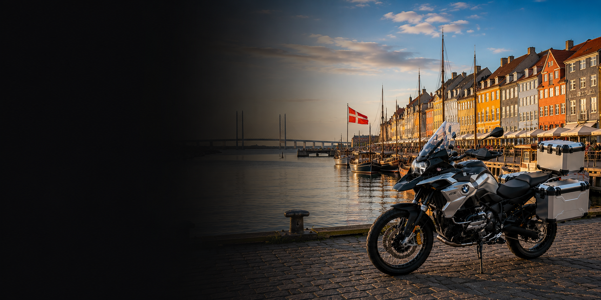

Thousands of UK motorcycles
Explore live motorcycles from UK dealers and private sellers through one platform.
Whether you're looking for a Yamaha, Honda, BMW, Triumph, Kawasaki, Suzuki, Ducati or KTM, AnyBike can help source the right motorcycle for export to the Denmark.

AnyBike helps international buyers find, purchase and prepare motorcycles from across the United Kingdom, with one connected enquiry and support process.
Explore live motorcycles from UK dealers and private sellers through one platform.
Tell us the exact make, model, year, mileage, colour, budget and specification required.
AnyBike can search beyond advertised stock for suitable motorcycles across the UK.
Ask about photographs, videos, seller checks and third-party inspection options before purchase.
Available motorcycle documents and appropriate UK-side preparation are confirmed with the buyer.
Arrange collection or delivery to your agreed freight forwarder, warehouse or shipping agent.
Whether you're looking for a Yamaha, Honda, BMW, Triumph, Kawasaki, Suzuki, Ducati or KTM, AnyBike can help source the right motorcycle for export to the Denmark.
Explore established motorcycle brands and open the currently available AnyBike stock, automatically filtered by the selected make.
Looking for a BMW motorcycle in Denmark? AnyBike can source BMW GS, RT, R nineT, S 1000 RR and other BMW motorcycles from UK dealers and private sellers.
View BMW Motorcycles →Find Yamaha YZF-R1, MT, Ténéré, Tracer and scooter models from dealers and private sellers throughout the United Kingdom.
View Yamaha Motorcycles →Source Honda Africa Twin, Fireblade, Gold Wing, CB and other Honda motorcycles from the UK market.
View Honda Motorcycles →Explore Triumph Tiger, Street Triple, Speed Triple, Bonneville and other British motorcycles available in the UK.
View Triumph Motorcycles →Browse Kawasaki Ninja, Z-series, Versys and other Kawasaki motorcycles from UK dealers and private sellers.
View Kawasaki Motorcycles →AnyBike can source Suzuki Hayabusa, V-Strom, GSX-R and other Suzuki motorcycles for export to the Denmark.
View Suzuki Motorcycles →Find Ducati Multistrada, Panigale, Monster, Diavel and other premium Ducati motorcycles in the United Kingdom.
View Ducati Motorcycles →Source KTM Adventure, Super Duke, enduro and performance motorcycles from UK dealers and private sellers.
View KTM Motorcycles →Open the available stock for the relevant manufacturer or submit a sourcing request for a specific model, year, mileage, colour or specification.
Looking for a Yamaha YZF-R1 for export to the Denmark? AnyBike can source suitable UK Yamaha R1 motorcycles by year, colour, mileage and specification.
View Yamaha YZF-R1 →Find Yamaha MT-09 and MT-09 SP motorcycles from UK dealers and private sellers, including specific colours and model years.
View Yamaha MT-09 →Source Yamaha Ténéré 700 motorcycles from the United Kingdom, including standard, Rally and higher-specification adventure models.
View Yamaha Ténéré 700 →Looking for a BMW R 1300 GS for export to the Denmark? AnyBike can source standard, Adventure, Triple Black and Option 719 examples from the UK.
View BMW R 1300 GS →Source manual, DCT and Adventure Sports Honda Africa Twin motorcycles from dealers and private sellers across the United Kingdom.
View Honda Africa Twin →AnyBike can help Denmark buyers locate UK Honda Fireblade motorcycles by generation, colour, mileage and specification.
View Honda Fireblade →Find Triumph Tiger 900 GT, Rally and Pro models from UK dealers and private sellers for export to the Denmark.
View Triumph Tiger 900 →Submit your preferred year, colour, mileage and specification and ask AnyBike to source a UK Kawasaki Ninja ZX-10R.
View Kawasaki Ninja ZX-10R →Source earlier-generation and current Suzuki Hayabusa motorcycles from UK dealers and private sellers.
View Suzuki Hayabusa →Find Ducati Multistrada V4, V4 S and Rally motorcycles from the UK market for export to the Denmark.
View Ducati Multistrada V4 →Ask AnyBike to locate a UK KTM 1290 Super Adventure, including S and R variants.
View KTM 1290 Super Adventure →Tell AnyBike exactly what motorcycle you need. Include the make, model, year range, mileage, colour, budget and preferred specification.
Source a Different Motorcycle →Recently added motorcycles are loaded directly from the AnyBike stock database. Open a listing for full motorcycle information and enquiry options.
AnyBike sells and sources motorcycles. Shipping supports the motorcycle purchase. Buyers may use their own shipping company or discuss suitable UK-side collection and handover arrangements. Import approval, customs clearance, duties, value-added tax, technical inspection and Denmark registration requirements should be checked before purchase.
Aarhus is the Denmark's principal commercial port and a major gateway for motorcycles destined for Port of Denmark and the wider Emirates.
Odense provides access to the capital and surrounding areas, with onward transport available through nominated logistics providers.
Aalborg is well positioned for buyers across the northern Emirates and offers access to established logistics and vehicle-handling facilities.
Buyers in Esbjerg and Umm Al Quwain can arrange onward delivery from the agreed Denmark port or logistics facility.
Randers can be served through northern Denmark logistics routes, with final delivery arranged by the buyer or nominated agent.
Buyers elsewhere in the Denmark can discuss their preferred port, freight provider, UK collection point and final delivery location with AnyBike.
Yes. Browse Available Stock or send AnyBike a sourcing request for the make, model, year, mileage, colour and specification you need.
Yes. AnyBike can search UK dealers, private sellers and selected suppliers for motorcycles that are not currently displayed in Available Stock.
Yes. Dealers can discuss one-off purchases, repeat sourcing, dealership stock and larger motorcycle requirements.
Yes. Private buyers can enquire about live stock or submit a sourcing request for a specific motorcycle.
Inspection options depend on the motorcycle and seller. Ask AnyBike what checks, photographs, videos or third-party inspection options are available before purchase.
Yes. AnyBike can arrange UK collection or delivery to an agreed freight forwarder, shipping agent, warehouse or port handling facility.
Yes. You may use your preferred shipping company. AnyBike can coordinate the UK-side handover and provide the agreed motorcycle and available documents.
Common gateways include Aarhus, Khalifa Port, Port Khalid, Hamriyah, Saqr Port and the Port of Central Denmark, depending on the shipping provider and final destination.
No. Customs duty, value-added tax, port charges, clearance fees, inspection costs and registration expenses may apply. Confirm all costs with your customs broker or the relevant Denmark authority before buying.
No. Registration cannot be guaranteed for every motorcycle. Check age, specification, compliance, technical inspection and registration requirements before purchase.
The documents available depend on the motorcycle and transaction. AnyBike will confirm the V5C, sale invoice, service history, keys and other available documents before completion.
Yes. Submit the exact make, model, year range, mileage, colour, budget and preferred specification so AnyBike can search the UK market.
Browse Available Stock, open a motorcycle listing and enquire, or use Source a Motorcycle when the exact bike is not currently advertised.
Browse UK motorcycles available now or tell AnyBike exactly what you need. We can help with a single motorcycle, dealer stock or a hard-to-find model.